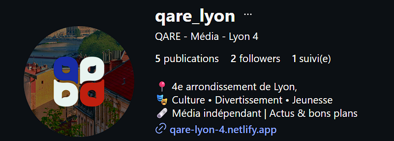
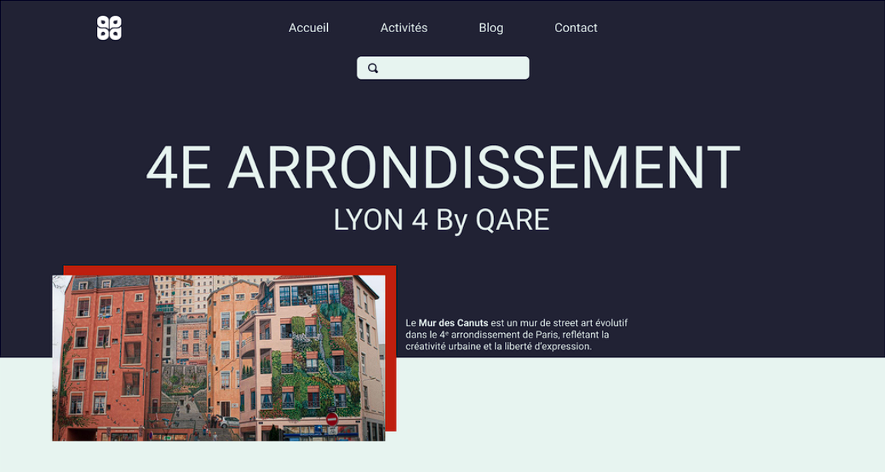

QARE
L'influence locale au cœur de la Croix-Rousse.
Développement d'un écosystème hybride Instagram & Blog SEO.

01 La Vision Stratégique
Dominer l'influence locale
Qare n'est pas qu'un simple compte Instagram sur le 4ème arrondissement de Lyon ; c'est un média de proximité conçu pour capturer l'attention des 18-25 ans.
En co-développant la stratégie de communication, j'ai misé sur une approche omnichannel : utiliser la force visuelle d'Instagram pour la communauté, et la puissance du Web (Blog) pour l'acquisition de nouveaux utilisateurs via Google.
02 Le Blog comme Levier de Croissance
Ma contribution majeure a été de concevoir et développer le site web de Qare. Contrairement à un compte social isolé, le blog permet de se positionner sur des recherches que les utilisateurs font quotidiennement.
Acquisition SEO
Growth HackingTransformer la recherche en abonné
J'ai optimisé le site pour des requêtes ultra-locales ("Meilleur café Croix-Rousse", "Sortir Lyon 4"). Une fois l'utilisateur sur le blog, tout est fait pour le rediriger vers l'écosystème Instagram.
Autorité Digitale
Le site sert de preuve sociale et de base de contenu longue durée (Evergreen), là où les posts Instagram disparaissent rapidement dans le flux.
Stratégie de Contenu
Co-conceptionSynergie Social-Web
J'ai participé à la création d'un tunnel de conversion : un Reel Instagram attire l'attention, tandis qu'un article de blog détaillé sur le site assoit l'expertise du média.
03 Développement & Performance Web
Pour maximiser le référencement naturel (SEO), j'ai développé une interface lightweight et ultra-rapide.

En utilisant du HTML pur et du CSS optimisé, j'ai garanti un score de performance élevé, essentiel pour le classement Google. Le site agit comme un "entonnoir" : il capte le trafic froid et le convertit en followers actifs pour le compte Instagram de Lyon 4.
04 Résultats
Une identité de média moderne et crédible. Grâce à ce couplage Site/Instagram, Qare ne dépend pas uniquement de l'algorithme des réseaux sociaux mais possède son propre canal d'acquisition organique.